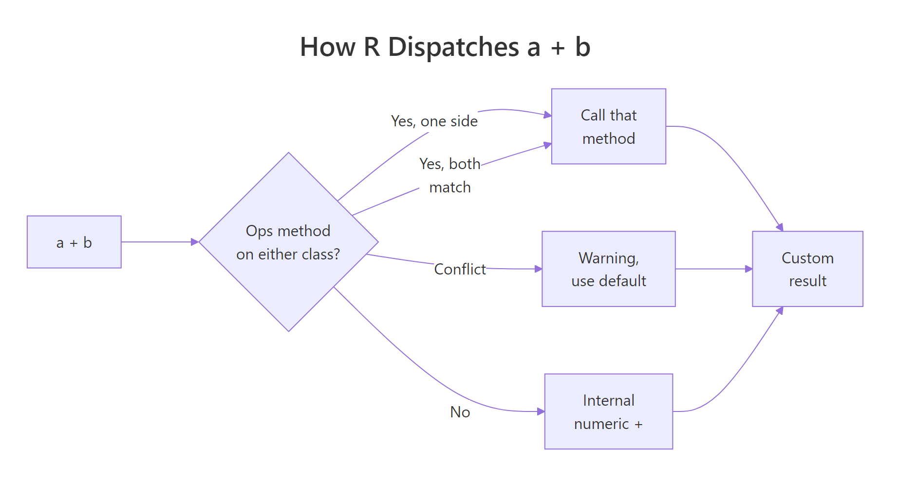
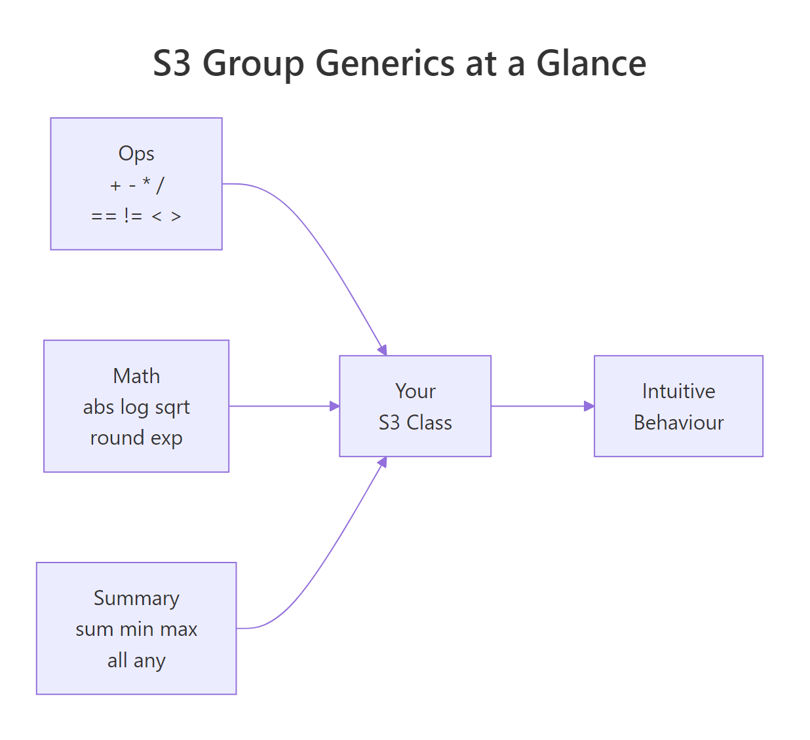
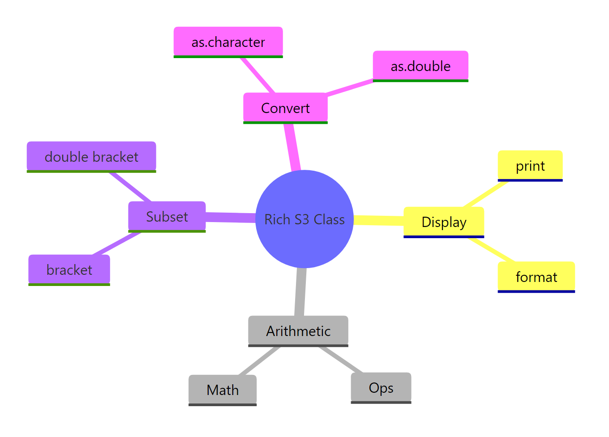

Operator Overloading in R: Give Your S3 Objects Intuitive Behaviour
Operator overloading in R lets you define what +, ==, [, and print do for your own S3 classes, so a length object adds in metres, a money object compares dollars, and every built-in operator keeps working the way it already looks.
You already use overloaded operators every day. Sys.Date() + 1 adds a day, not the integer 1 to a number. factor("a") == "a" compares labels, not the underlying integer codes. Both work because R's operators are S3 generics, ordinary functions that dispatch to methods based on class. The rest of this tutorial shows you how to write those methods for your own classes.
What exactly is operator overloading in R?
Here is the shortest possible payoff. We'll define a tiny length class that stores metres, teach + how to add two of them, and teach print how to display them. Everything else in the tutorial builds on this three-line pattern.
The constructor is a plain list() with a class attribute. +.length_m is a function whose name is the generic (+) followed by a dot and the class (length_m), that's the whole recipe. When R sees a + b it checks the class of a, finds +.length_m, and calls it. The result is still a length_m, so print() also dispatches to our method and shows "5 m".
Try it: Write -.length_m so that a - b returns a length_m holding the difference. Test it on length_m(10) - length_m(4).
Click to reveal solution
Explanation: Subtraction follows the exact same pattern as addition, name the method -.length_m, do the arithmetic on the value field, and wrap the result back in the constructor so print still fires.
How does R decide which operator method to call?
Binary operators like + have two arguments, so R can't dispatch on just the first one the way print() does. Instead, it uses double dispatch: it examines the class of both sides and picks a method that works for either. That's how as.Date("2020-01-01") + 1 can find a date method even though 1 is a plain integer on the right.
The left operand has class length_m, the right is a plain number. R looks for a method on either side, finds only ours, and calls it. Our existing +.length_m happens to handle this correctly because e2$value on a bare number quietly becomes NULL… which would actually break. Let's see what a robust version looks like.
Now either side can be a plain number. This matters because double dispatch is commutative, R will call +.length_m for 3 + a too, as long as at least one operand has the class. The method itself needs to stay symmetric, which is why we extract v1 and v2 before adding.

Figure 1: How R resolves a binary operator across two argument classes.
Things get noisier when two custom classes collide. If the left and right sides each define their own + method and the methods disagree, R prints a warning and falls back to the internal numeric +, which almost never does what you want.
R saw two different methods and couldn't decide, so it stripped the class wrapper and returned a malformed object. The fix is to make one method aware of the other, either convert length_ft to metres inside +.length_m, or define a shared parent class. The warning is R's way of telling you "your two classes haven't agreed on how to meet yet."
Try it: Without running it, predict what 3 + a returns. Check the dispatch rule: which operand is searched first?
Click to reveal solution
Explanation: Even though 3 is on the left and has no class, a on the right has class length_m and defines +.length_m. Double dispatch checks both operands, finds our method on the right, and calls it. The method extracts v1 = 3 and v2 = 3 and returns a length_m of 6.
When should you use the Ops group generic instead?
Writing +, -, *, /, ==, !=, <, <=, >, >= one by one gets old fast, that's ten methods just for basic arithmetic and comparison. R ships a shortcut: the Ops group generic. Define a single function called Ops.yourclass and R routes every operator in the group to it, passing the operator name in the special variable .Generic.
.Generic is a string like "+" or "==", and get(.Generic) fetches the actual base function, that's how one method handles every operator. We branch at the end: arithmetic wraps the result back into a length_m, comparison returns a bare logical (because asking "is 3 m less than 5 m" should give TRUE, not a length object).
All four call the same Ops.length_m. That's ten operators covered by one function, and when you need to add %% later, you just add it to the if branch. The pattern scales much better than writing individual methods.

Figure 2: The three S3 group generics that cover most math and comparison needs.
[, [[), display (print, format), and conversion (as.character) still need their own named methods.Try it: The method above rejects %% (modulo) with an error. Extend the allowed-arithmetic branch so that length_m(10) %% length_m(3) returns length_m(1).
Click to reveal solution
Explanation: Adding "%%" to the arithmetic whitelist lets the method wrap the modulo result in a length_m. The whitelist is your safety net, anything outside it hits the final stop() branch with a clear error.
How do you make your class print and format nicely?
print.length_m above works, but it has a subtle weakness: only print() knows about units. If someone writes paste("Height:", a) they get back "Height: list(value = 3)" or worse. The clean solution is to split display into two methods. format.class produces the character representation; print.class calls format and adds any surrounding context.
format() returns a string, so everything that calls format() under the hood, paste, sprintf, as.character, data-frame printing, automatically picks up our unit suffix. print.length_m becomes a thin wrapper: one cat() and an invisible return so the object isn't duplicated on screen when printing is called implicitly.
invisible(x) from a print method. If you return x normally, calling print(a) from inside another function can re-trigger printing and double up the output. invisible(x) keeps the value available to the caller without displaying it.Try it: Modify format.length_m so the number is shown with exactly two decimal places, for example, length_m(3) should display as "3.00 m". Use sprintf("%.2f", x$value).
Click to reveal solution
Explanation: sprintf("%.2f", ...) formats a number with two decimal places as a string. Wrapping it in paste0 glues the unit suffix on. Because print.length_m calls format, the new formatting applies to print(a) as well, one change, two behaviours fixed.
How do you overload [ and [[ for vectorised classes?
So far length_m has stored a single number. The more useful version stores a vector of values, a whole column of lengths, and supports subsetting. The trick is that [ is also a generic, so you can write [.length_m to keep the class attached after a slice. The implementation uses NextMethod(), which calls the next method in the dispatch chain (here, plain numeric subsetting).
[.length_m subsets the internal value vector and rewraps it, one line of real work. The replacement form [<-.length_m is a little more delicate because the value coming in might itself be a length_m (assigning one unit to another) or a bare number (assigning a literal). The guard checks which and extracts the underlying numbers before writing.
[.class if your class can be subclassed. Using the constructor forces the result back to the base class and strips subclass information. For single-class use the constructor is fine; if you plan to subclass, use vctrs::vec_restore(NextMethod(), x) instead so the subclass sticks around.Try it: Write [[.length_m so that lens[[3]] returns a length_m holding just the third element. [[ on a list normally returns the raw element; we want the class preserved.
Click to reveal solution
Explanation: [[.length_m pulls out a single element with x$value[[i]] and rewraps it in the constructor. Without this method, lens[[3]] would strip the class and return a plain number, because [[ dispatches on the underlying list, not the length_m wrapper.
How do you also overload Math, Summary, and comparison operators?
Alongside Ops, R has two more group generics worth knowing. Math covers element-wise functions like sqrt, log, abs, round, exp. Summary covers reducers like sum, min, max, all, any. Both work the same way as Ops: one method, dispatch on .Generic.
Math.length_m is almost a one-liner because every Math function takes a single vector and returns another vector of the same length. Summary.length_m is slightly longer because sum(a, b, c) is valid, you might pass several length_m objects to reduce at once, so we unlist everything into a single numeric vector before reducing.

Figure 3: The method family a rich S3 class typically ships with.
Try it: You didn't define a method for range(), but try range(lens) anyway. Why does it work? (Hint: check ?range for what it calls internally.)
Click to reveal solution
Explanation: range() is not in the Summary group itself, but internally it calls min() and max(), both of which are in Summary and have our method. So range(lens) hits Summary.length_m twice and returns a two-element length_m. This cascade is exactly why group generics are worth the small upfront effort.
Practice Exercises
Exercise 1: A Celsius temperature class
Build a celsius() constructor that stores a temperature. Use the Ops group generic so that celsius(20) + celsius(5) returns celsius(25), and celsius(20) > celsius(15) returns TRUE. Also write print.celsius that displays "20 °C".
Click to reveal solution
Explanation: The structure mirrors length_m, the Ops method handles all operators in one place and branches on .Generic to decide whether the result stays wrapped (arithmetic) or collapses to a bare logical (comparison). The print method uses cat() with the °C glyph.
Exercise 2: A currency-aware money class
Build a money(amount, currency) constructor that stores both an amount and a currency string. Overload +.money so adding two same-currency amounts works, but mixing currencies throws an error. Write format.money and print.money that produce "$100.00 USD".
Click to reveal solution
Explanation: The guard inside +.money is what makes the class safer than plain numbers, mixing currencies is almost always a bug, so the class refuses. format.money returns a string, and print.money delegates to it so paste("Total:", format(m1)) also works correctly.
Exercise 3: A 2-D point class without Ops
Build a point(x, y) constructor, then overload + and - as individual methods (not Ops) so you can add and subtract points component-wise. Add ==.point comparing both coordinates, and print.point showing "(3, 4)". This exercise is the "no shortcuts" version, it shows what the group generic was hiding.
Click to reveal solution
Explanation: Writing three separate methods works fine for a small class, but notice the pattern, each one unpacks e1 and e2, does the same arithmetic on both fields, and rewraps. Ops.point would compress all three into one .Generic-driven block, which is exactly why the group generic exists.
Complete Example: A physical units class
Here is an end-to-end class that combines everything from the tutorial. units() stores a numeric vector plus a unit string. It supports Ops (arithmetic and comparison), print/format (display with unit suffix), [ (vector subsetting), and Summary (sum, max, min).
This one class shows every technique from the tutorial working together. Ops.units enforces unit compatibility at the boundary, trying to add metres to kilograms fails loudly instead of silently producing nonsense. Summary.units lets reducers like sum stay in "units-space". [.units keeps the class attached through subsetting. And the format/print pair ensures that whether you explicitly print or just paste the value into a sentence, the unit suffix travels along.
Summary
| What you want | How to do it | Tiny example |
|---|---|---|
| Add two of your objects | Define +.class or Ops.class |
` +.length_m <- function(e1, e2) length_m(e1$value + e2$value) ` |
| One method for all arithmetic + comparison | Define Ops.class, branch on .Generic |
Ops.length_m <- function(e1, e2) {...} |
| Pretty printing | Pair format.class with print.class |
format.length_m <- function(x, ...) paste0(x$value, " m") |
| Subset a vectorised class | Define [.class, call constructor on the slice |
` [.length_m <- function(x, i) length_m(x$value[i]) ` |
Element-wise math (sqrt, abs, log) |
Define Math.class |
Math.length_m <- function(x, ...) length_m(get(.Generic)(x$value, ...)) |
Reducers (sum, max, min) |
Define Summary.class |
Summary.length_m <- function(...) {...} |
| Compare custom objects | Let Ops handle it, or write ==.class |
a == b inside Ops.length_m returns a bare logical |
References
- Wickham, H., Advanced R, 2nd Edition. Chapter 13: S3. Link
- Gagolewski, M., Deep R Programming, Chapter 10: S3 classes. Link
- R Core Team,
?groupGeneric(base R documentation). Link - R Core Team,
?Ops,?Math,?Summary. Link - Wickham, H., Advanced R, §13.4 "Object styles" and §13.6.1 "Operators and double dispatch". Link
- vctrs package,
?vec_arithfor modern arithmetic dispatch. Link - units package, reference implementation of
Ops.unitsfor physical quantities. Link
Continue Learning
- S3 Classes in R, how to define the class structure your operator methods dispatch on.
- S3 Method Dispatch in R, a deeper look at how R resolves a method call, including
NextMethod()and inheritance chains. - R6 Classes in R, the reference-semantics alternative when you need mutable state and don't want double-dispatch gymnastics.